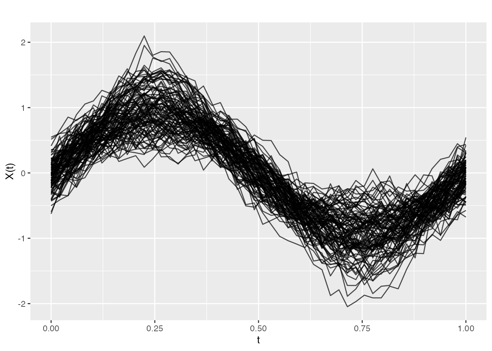

Introduction
Functional regression predicts a scalar response from functional predictors. The general model is:
where is a functional predictor and is a functional coefficient.
fdars provides three main approaches:
-
Principal Component Regression
(
fregre.pc) -
Basis Expansion Regression
(
fregre.basis) -
Nonparametric Regression
(
fregre.np)
library(fdars)
#>
#> Attaching package: 'fdars'
#> The following objects are masked from 'package:stats':
#>
#> cov, deriv, median, sd, var
#> The following object is masked from 'package:base':
#>
#> norm
# Generate example data
set.seed(42)
n <- 100
m <- 50
t_grid <- seq(0, 1, length.out = m)
# Functional predictors
X <- matrix(0, n, m)
for (i in 1:n) {
X[i, ] <- sin(2 * pi * t_grid) * rnorm(1, 1, 0.3) +
cos(4 * pi * t_grid) * rnorm(1, 0, 0.2) +
rnorm(m, sd = 0.1)
}
fd <- fdata(X, argvals = t_grid)
# True coefficient function
beta_true <- sin(2 * pi * t_grid)
# Generate response: Y = integral(beta * X) + noise
y <- numeric(n)
for (i in 1:n) {
y[i] <- sum(beta_true * X[i, ]) / m + rnorm(1, sd = 0.5)
}
plot(fd)
Principal Component Regression
PC regression projects the functional data onto principal components and uses the scores as predictors in a linear model.
Cross-Validation for Component Selection
# Find optimal number of components
cv_pc <- fregre.pc.cv(fd, y, kmax = 10)
cat("Optimal number of components:", cv_pc$ncomp.opt, "\n")
#> Optimal number of components:
cat("CV error by component:\n")
#> CV error by component:
print(round(cv_pc$cv.error, 4))
#> 1 2 3 4 5 6 7 8 9 10 11
#> 0.2674 0.2700 0.2720 0.2735 0.2785 0.2735 0.2691 0.2718 0.2728 0.2744 0.2735
#> 12 13 14 15
#> 0.2746 0.2714 0.2703 0.2746Prediction
# Split data
train_idx <- 1:80
test_idx <- 81:100
fd_train <- fd[train_idx, ]
fd_test <- fd[test_idx, ]
y_train <- y[train_idx]
y_test <- y[test_idx]
# Fit on training data
fit_train <- fregre.pc(fd_train, y_train, ncomp = 3)
# Predict on test data
y_pred <- predict(fit_train, fd_test)
# Evaluate
cat("Test RMSE:", round(pred.RMSE(y_test, y_pred), 3), "\n")
#> Test RMSE: 0.457
cat("Test R2:", round(pred.R2(y_test, y_pred), 3), "\n")
#> Test R2: 0.219Basis Expansion Regression
Expands both the functional data and coefficient function in a basis (B-spline or Fourier), then estimates coefficients with ridge regression.
Basic Usage
# Fit basis regression with 15 B-spline basis functions
fit_basis <- fregre.basis(fd, y, nbasis = 15, type = "bspline")
print(fit_basis)
#> Functional regression model
#> Number of observations: 100
#> R-squared: -4.470287Regularization
The lambda parameter controls regularization:
# Higher lambda = more regularization
fit_basis_reg <- fregre.basis(fd, y, nbasis = 15, type = "bspline", lambda = 1)Cross-Validation for Lambda
# Find optimal lambda
cv_basis <- fregre.basis.cv(fd, y, nbasis = 15, type = "bspline",
lambda = c(0, 0.001, 0.01, 0.1, 1, 10))
cat("Optimal lambda:", cv_basis$lambda.opt, "\n")
#> Optimal lambda:
cat("CV error by lambda:\n")
#> CV error by lambda:
print(round(cv_basis$cv.error, 4))
#> 0 0.001 0.01 0.1 1 10
#> 30.0456 0.5926 0.5605 0.4299 0.3209 0.2977Fourier Basis
For periodic data, use Fourier basis:
fit_fourier <- fregre.basis(fd, y, nbasis = 11, type = "fourier")Nonparametric Regression
Nonparametric regression makes no assumptions about the form of the relationship between and .
Bandwidth Selection
# Cross-validation for bandwidth
cv_np <- fregre.np.cv(fd, y, h.seq = seq(0.1, 1, by = 0.1))
cat("Optimal bandwidth:", cv_np$h.opt, "\n")
#> Optimal bandwidth:Different Kernels
# Epanechnikov kernel
fit_epa <- fregre.np(fd, y, Ker = "epa")
# Available kernels: "norm", "epa", "tri", "quar", "cos", "unif"Comparing Methods
# Fit all methods on training data
fit1 <- fregre.pc(fd_train, y_train, ncomp = 3)
fit2 <- fregre.basis(fd_train, y_train, nbasis = 15)
fit3 <- fregre.np(fd_train, y_train, type.S = "kNN.gCV")
# Predict on test data
pred1 <- predict(fit1, fd_test)
pred2 <- predict(fit2, fd_test)
pred3 <- predict(fit3, fd_test)
# Compare performance
results <- data.frame(
Method = c("PC Regression", "Basis Regression", "k-NN"),
RMSE = c(pred.RMSE(y_test, pred1),
pred.RMSE(y_test, pred2),
pred.RMSE(y_test, pred3)),
R2 = c(pred.R2(y_test, pred1),
pred.R2(y_test, pred2),
pred.R2(y_test, pred3))
)
print(results)
#> Method RMSE R2
#> 1 PC Regression 0.4570245 0.21884391
#> 2 Basis Regression 1.6993189 -9.79962564
#> 3 k-NN 0.4935318 0.08906132Visualizing Predictions
# Create comparison data frame
df_pred <- data.frame(
Observed = y_test,
PC = pred1,
Basis = pred2,
kNN = pred3
)
# Observed vs predicted
library(ggplot2)
ggplot(df_pred, aes(x = Observed, y = PC)) +
geom_point() +
geom_abline(intercept = 0, slope = 1, linetype = "dashed", color = "red") +
labs(title = "PC Regression: Observed vs Predicted",
x = "Observed", y = "Predicted") +
theme_minimal()
Method Selection Guide
| Method | Assumptions | Strengths | Weaknesses |
|---|---|---|---|
| PC Regression | Linear relationship | Interpretable, fast | May miss nonlinear patterns |
| Basis Regression | Smooth coefficient | Flexible, regularized | Requires basis choice |
| k-NN | None | No assumptions | Slower, requires metric choice |
References
- Ramsay, J.O. and Silverman, B.W. (2005). Functional Data Analysis. Springer.
- Ferraty, F. and Vieu, P. (2006). Nonparametric Functional Data Analysis. Springer.
- Reiss, P.T. and Ogden, R.T. (2007). Functional Principal Component Regression and Functional Partial Least Squares. Journal of the American Statistical Association, 102(479), 984-996.